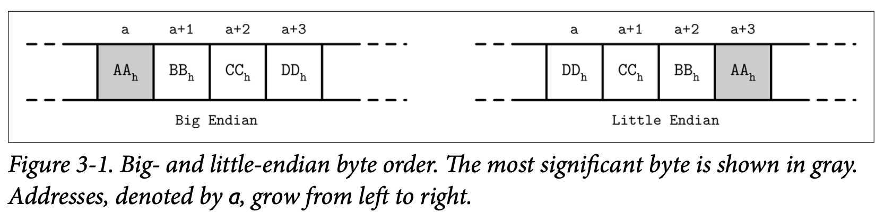

Binary Encoding
为了能在磁盘中高效的存储数据，需要以紧凑的易于序列化跟反序列化的格式进行编码。在讨论二进制格式时可能会经常提到 layout 布局这个词。因为我们没有原始的 malloc 跟 free ，只有 read 跟 write，我们需要考虑以不同的方式来访问跟准备相应的数据。
在这里我们将讨论创建高效页布局的主要原则，这些原则适用于任意的二进制格式：你可以使用类似的指南去创建文件跟序列化格式或者是通信协议。
在我们开始将数据记录组织为页之前，需要先理解如何使用二进制模式来表示对应的 Key 跟数据记录，如果将多个值合并成一个复杂的数据结构，以及如何实现可变长度的类型跟数组。
Primitive Types
Key 跟 Value 都具有指定的类型，比如 integer 整形、date 日期、string 字符串，这些类型都可以表示为 (序列化或者反序列化) 原始的二进制格式。
大部分的数值数据类型都是以固定长度的值来表示的。在处理多需要用多个字节来表示的数值时，要使用同一种 byte-order 字节序来进行编码跟解码。字节序决定了字节的顺序:
-
Big-endian
大端序从最高位的字节开始，然后依次是越来越低位的字节，话句话说，大端具有最小地址。
-
Little-endian
小端序从较低位的字节开始，然后是越来越高位的的字节。
Figure 3-1 的插图描绘了这个概念，这个16 进制的 32位 整数 0xAABBCCDD，AA 是他的最高位，在下面分别以大端跟小端的顺序展示了出来

举个例子，为了使用对应的字节顺序来重组一个 64 位的整数，RocksDB 为特定平台定义了目标平台字节序。如果目标平台的字节序不跟值的字节序不匹配 *(``EncodeFixed64WithEndian函数通过比较对应值跟kLittleEndian的大小)*，他就会使用EndianTransform` 来对字节进行反转，他能够以相反的顺序读取字节数据并将他们添加到结果中。
数据记录由一些基础类型如数字、字符串、布尔值，以及这些值的组合组成。但是，在通过网络传输数据或者将其存储到磁盘时，我们只能将其看为字节的序列。这意味着，为了发送或写入数据记录，我们需要对其进行序列化 (将其转换成可解释的字节序列)，然后在我们接受跟读取数据时，需要将其进行反序列化 (从字节序列转换为原始的数据记录)。
在二进制数据格式中，我们基本都是从用来构建复杂数据结构的基本元素开始。不同的数值类型有不同的尺寸，字节类型是 8 位，短整形是 2 个字节 (16位)，整形是 4 个字节 (32位)，长整形是 8 个字节 (64位)。
浮点型数值 (如 flat 跟 double) 使用 sign 符号位、fraction 分数跟 exponent 指数 来表示。IEEE Standard for Binary Floating-Point Arithmetic (IEEE 754) 标准描述了被广泛接受的浮点数表现形式。一个 32 位的浮点数表示一个精确的数值。举例来说，一个浮点数 $0.15652$ 的二进制表示，我们将它展示在了 Figure 3-2 中。前 23 位表示分数，后续的 8 位表示指数，最后的一位则表示符号位 (即该数值是正数还是负数)。

因为浮点数的值是需要通过分数计算出来的，因此该数值表示的数值只是个近似值。完整讨论该算法已经超出了本书的范围，因此我们只会覆盖了其中基础的部分。
double 能够表示双精度的浮点数。大部分的编程语言都在其标准库中实现了对浮点数的二进制进行编码跟解码。
Strings and Variable-Size Data
所有的基础数值类型都是固定大小的。将他们组合成更复杂结构的方式跟 C 里面的结构体很想。你可以将基础类型组合成结构体并用固定尺寸的数组或指向其他内存区域的指针。
字符串和其他的可变长数据类型 (如固定长度类型的数组) 能够序列化为数值，表示这个数组或字符串的偿付，在该数字之后则是其具体的真实数据。举个字符串的例子，下面的这个表示方式一般称为 UCSD String 或 Pascal String，这个名字来源于一个流行的 Pascal 编程语言的实现，我们可以使用类似下面的伪代码来表示:
String {
size uint_16
data byte[size]
}
一个用来替代 Pascal String 的方法是使用 null-terminated strings 以空字符终结的字符串，对字符串的读取是按照逐个字节进行的，直到最终遇到 end-of-string 字符串结束的符号。Pascal String 的方式有几个有点: 他允许我们用常数时间得到字符串的长度，而无需遍历整个字符串的内容，在具体的编程语言中可以使用传递字节切片及其大小来重新构建字符串。
Bit-Packed Data: Booleans, Enums, and Flags
布尔型可以使用一个单独的字节来表示，也可以使用 1 跟 0 的编码来表示 true 跟 false 。因为布尔类型只会有两种值，因此使用整个字节来表示是比较浪费的，因此开发人员通常会按照 8 的倍数来将多个布尔类型的值打包到一起。每个布尔值只需要使用其中的一位。每一位都能够用来表示来表示该值是否被设置了 (1) 或是未设置或为空 0。
枚举是 enumerated type 枚举类型的简称，他可以用整数来表示并常常以二进制的格式在传输协议中使用。枚举一般用较低的基数来表示，比如使用枚举来编码 B-Tree 的节点类型：
enum NodeType {
ROOT, // 0x00h
INTERNAL, // 0x01h
LEAF // 0x02h
}
另一种类似的概念是 flags 标记，一种用来组合跟打包布尔值跟枚举的类型。标记可以用来表示非互斥的命名布尔参数。比如，我们可以使用标记来表示页面是否包含值的单元，该值是固定长度的还是可变长度的，表示一个页面是否有关联的节点。因为每个位都可以表示一个标记的值，我们可以只使用 2 的倍数作为掩码 (因为 2 的倍数只会有一个位是被设置为 1 的，如 $2^3 == 8 == 1000b, 2^4 == 16 == 0001 0000b$)。
int IS_LEAF_MASK = 0x01h; // bit #1
int VARIABLE_SIZE_VALUES = 0x02h; // bit #2
int HAS_OVERFLOW_PAGES = 0x04h; // bit #3
就像打包后的布尔值，标志使用 bitmasks 位的掩码跟位操作符来执行读取跟写入操作。比如为了打开某个位的设置，我们会使用位操作 OR (|) 跟位掩码来进行操作。也可以使用 bitshift (<<) 移位操作来实现。为了取消某个位，我们可以使用位操作 AND (&) 跟位的取反操作符 (~)。为了测试某个位是否被设置了，我们还可以在指定位跟 0 来执行比较位操作 AND 。
// Set the bit
flags |= HAS_OVERFLOW_PAGES;
flags |= (1 << 2);
// unset the bit
flasg &= ~HAS_OVERFLOW_PAGES;
flasg &= ~(1 << 2);
// Test weather or not the bit is set
is_set = (flags & HAS_OVERFLOW_PAGES) != 0;
is_set = (flags & (1 << 2)) != 0;